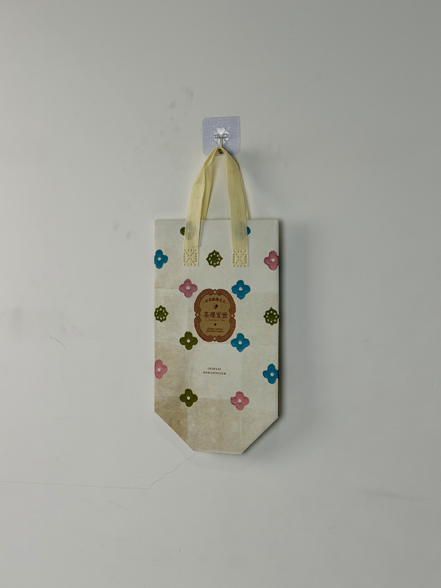

A romantic cream-toned thermal bag for Cha Li Yi Shi, featuring colorful scattered florals and a vintage label-style brand mark that embodies the brand's "Chinese Romanticism" philosophy.

Cha Li Yi Shi (茶理宜世) is a Guangzhou-based fresh-tea brand that has distinguished itself in China's competitive beverage market through a singular aesthetic vision: "Chinese Romanticism." While most tea chains chase modern minimalism or cartoon cuteness, Cha Li Yi Shi cultivates a nostalgic, romantic atmosphere inspired by Republican-era Shanghai, vintage European tea salons, and classical Chinese poetry. The brand's stores are designed as immersive romantic spaces, and every touchpoint — from cup design to staff uniforms — reinforces this carefully constructed world.
Every cup of tea we serve is a love letter. The bag that carries it should feel like an envelope for that letter.
The thermal bag was developed as part of a seasonal spring collection that celebrated the brand's romantic philosophy through floral motifs and vintage design language. The bag needed to maintain beverage temperature while functioning as a collectible object that customers would preserve and reuse.
The design draws from vintage botanical illustration and European confectionery packaging. Colorful scattered florals in pink, blue, and olive green dance across a cream field, while the central oval label evokes antique apothecary and perfume packaging. The "Chinese Romanticism" descriptor positions the brand within a specific cultural-literary tradition.
Colorful botanical shapes in pink, blue, and olive create a joyful, garden-party atmosphere.
Oval apothecary-style frame with decorative borders evokes antique perfume and tea packaging.
Warm ivory tone creates vintage paper association and romantic softness.
Brand descriptor anchors the design in a specific cultural-literary movement and aesthetic philosophy.
The bag was engineered for cold-beverage delivery while preserving the delicate, vintage-inspired aesthetic. The multi-color floral pattern required precise registration, and the cream base demanded color consistency to maintain the warm, paper-like quality.
| Parameter | Specification | Test Standard |
|---|---|---|
| Cold Retention | < 12°C for 40 min (30°C ambient) | Internal Protocol |
| Load Capacity | 3 kg | ASTM D5265 |
| Print Registration | ±0.5mm | Internal Protocol |
| Seam Strength | > 20 N/cm | ASTM D1683 |
The multi-color floral pattern required gravure printing precision to maintain color vibrancy on the cream base. The five-stage workflow ensured vintage aesthetic fidelity alongside thermal functionality.
100gsm non-woven PP with warm cream masterbatch. Color calibrated for vintage paper tone under D65 lighting.
CMYK process for scattered florals and vintage label. 175 LPI for fine botanical detail and ornamental border clarity.
15-micron matte BOPP preserving the soft, paper-like surface quality essential to the vintage aesthetic.
3mm EPE foam laminated to aluminum-PE barrier. Heat-compression at 3.5kg/cm for uniform insulation.
Ultrasonic die-cutting with sealed edges. Cream handles attached with reinforced stitching. Floral color accuracy verified per batch.
The thermal bag was deployed across Cha Li Yi Shi's Guangdong and Fujian store network as part of the spring "Chinese Romanticism" collection. The campaign targeted female consumers aged 18-30 who represent the brand's core demographic and are most responsive to romantic, collectible packaging aesthetics.
Key Insight: The bag became a collectible item within the brand's fan community. Customers organized online exchanges to collect different seasonal bag designs, and secondary-market resale emerged for out-of-season variants. The packaging had transcended its functional purpose to become part of a collecting hobby.
The cream base color proved strategically effective for photography. Unlike dark or neon bags that constrain photo styling, the warm ivory tone complemented virtually any outfit or background — making it the most frequently photographed bag in the brand's packaging history.
Three design decisions differentiate this romantic tea bag from standard beverage packaging. Each leverages nostalgia and emotional warmth to create lasting customer attachment.
The apothecary-style oval frame transports recipients to an imagined past of hand-labeled botanical products. This nostalgia trigger creates emotional warmth that modern, minimalist packaging cannot replicate. The vintage aesthetic doesn't just decorate the bag — it tells a story about tradition and craftsmanship.
The random, colorful floral distribution creates a sense of spontaneous natural beauty rather than rigid pattern design. This organic scattering feels more like a garden in bloom than a manufactured print — conveying the romantic, slightly wild spirit that the brand cultivates.
The warm ivory tone functions as a neutral that coordinates with any outfit, any season, and any setting. Customers report carrying the bag to work, dates, and weekend outings — a versatility that maximizes brand exposure across diverse life contexts.
We design thermal delivery bags for brands seeking emotional differentiation through vintage aesthetics and floral design. From botanical illustration to romantic color palettes, we create packaging customers want to keep.